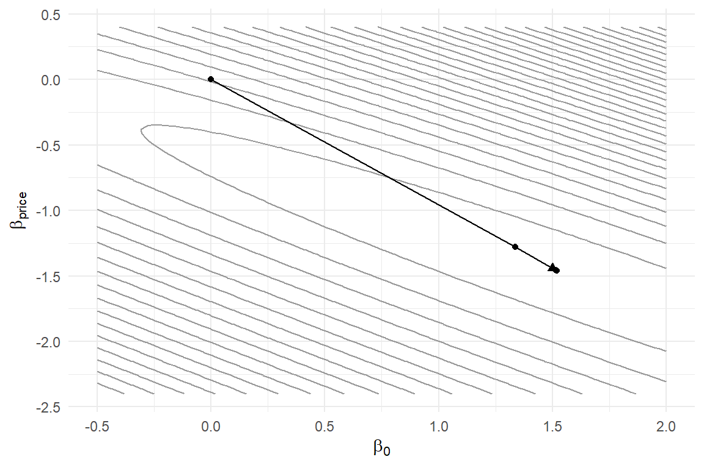

newton_binary <- function(beta0, y, X, tol = 1e-10, max_iter = 25) {
beta <- beta0
path <- list(beta)
for (i in 1:max_iter) {
P <- plogis(as.vector(X %*% beta)) # P_n for all n
s <- crossprod(X, y - P) # score: X'(y - P)
H <- -crossprod(X * (P * (1 - P)), X) # hessian: -X' W X
step <- solve(H, s) # H^{-1} s without inverting
beta <- beta - as.vector(step)
path[[i + 1]] <- beta
if (max(abs(step)) < tol) break
}
list(beta = beta, hessian = H, iterations = i,
path = do.call(rbind, path))
}6 Numerical Optimization
Chapter 5 left us standing at the base of a hill. The log-likelihood \(\ell(\boldsymbol{\beta})\) is a surface over the parameter space; the MLE is its summit; and grid search — visiting every location and comparing altitudes — dies exponentially as the space grows dimensions. This chapter builds the climber. The methods here are not specific to choice models; they are the general machinery for maximizing smooth functions, and mastering them pays off every time you write down a new model with a computable likelihood — which is to say, for the rest of this book and the rest of your research life.
A note on ambition before we start. R ships with excellent optimizers, and by the chapter’s end we will happily hand our work to optim(). But we first build Newton’s method by hand, for the same reason this book simulates before it estimates: optimizers are the least inspectable link in the estimation chain — data goes in, numbers come out, and when something goes wrong (“convergence code 1”?) the black box offers no comfort. Twenty lines of your own Newton iteration make the box transparent forever.
6.1 Climbing a Hill You Cannot See
Picture standing on the log-likelihood surface in fog. You cannot see the summit; you can only feel the ground at your feet — evaluate \(\ell\), and its derivatives, at your current position. Every practical method is a loop built from that local information:
- From the current position \(\boldsymbol{\beta}^{(i)}\), choose a direction \(\mathbf{d}_i\).
- Choose a step size \(\lambda_i\).
- Move: \(\boldsymbol{\beta}^{(i+1)} = \boldsymbol{\beta}^{(i)} + \lambda_i \mathbf{d}_i\). Repeat until no direction goes up.
(The parenthesized superscript counts iterations, just as \(\varepsilon^{(r)}\) counted draws in Chapter 1; subscripts on \(\boldsymbol{\beta}\) stay reserved for its elements, \(\beta_k\).)
The score \(s(\boldsymbol{\beta})\) — the gradient from Equation 5.7 — feels the slope, and pointing straight uphill (\(\mathbf{d}_i = s(\boldsymbol{\beta}^{(i)})\), steepest ascent) seems natural. It is also famously inefficient: on the elongated, tilted contours we saw in Figure 5.2, steepest ascent zigzags across the narrow axis of the valley, inching along its length. The cure is to consult not just the slope but the curvature, and that idea has a name.
6.2 Newton–Raphson
Approximate the surface near the current position by its second-order Taylor expansion — a quadratic bowl (inverted) with the same slope and curvature:
\[ \ell(\boldsymbol{\beta}) \approx \ell(\boldsymbol{\beta}^{(i)}) + s_i'(\boldsymbol{\beta}- \boldsymbol{\beta}^{(i)}) + \tfrac{1}{2} (\boldsymbol{\beta}- \boldsymbol{\beta}^{(i)})' H_i \, (\boldsymbol{\beta}- \boldsymbol{\beta}^{(i)}) \tag{6.1}\]
where \(s_i\) and \(H_i\) are the score and Hessian at \(\boldsymbol{\beta}^{(i)}\). A quadratic we can maximize exactly: setting the derivative \(s_i + H_i(\boldsymbol{\beta}- \boldsymbol{\beta}^{(i)})\) to zero gives the Newton–Raphson step
\[ \boldsymbol{\beta}^{(i+1)} = \boldsymbol{\beta}^{(i)} - H_i^{-1} s_i \tag{6.2}\]
Jump directly to the top of the local quadratic model, re-fit the model there, jump again. Where the surface really is quadratic, one step lands on the summit; where it is merely smooth, convergence near the optimum is quadratic — roughly, the number of correct digits doubles per iteration. Compare Equation 6.2 with steepest ascent: multiplying the score by \(-H_i^{-1}\) rotates and rescales the uphill direction, exactly correcting for the tilted, elongated contours that make steepest ascent zigzag. And notice a happy economy: \(-H^{-1}\) evaluated at the last step is exactly the covariance estimate Equation 5.10 requires (up to the sign, the algorithm’s machinery and the inference machinery are the same matrix).
To implement Newton for the binary logit, we need its score and Hessian analytically. The score we derived as Equation 5.8: \(s(\boldsymbol{\beta}) = \mathbf{X}'(\mathbf{y}- \mathbf{P})\). One more differentiation — only \(\mathbf{P}\) depends on \(\boldsymbol{\beta}\), and \(\partial P_n / \partial \boldsymbol{\beta}= P_n(1-P_n)\mathbf{x}_n\) — gives
\[ H(\boldsymbol{\beta}) = -\sum_{n=1}^{N} P_n (1 - P_n) \, \mathbf{x}_n \mathbf{x}_n' = -\mathbf{X}' W \mathbf{X} \tag{6.3}\]
with \(W = \mathrm{diag}\big(P_n(1-P_n)\big)\). Note \(H\) is negative definite everywhere — the binary logit’s log-likelihood is globally concave, one peak and no traps, which is part of why it makes such a good training ground.1
Here is the whole algorithm; the loop body is Equation 6.2 verbatim:
Three implementation notes. plogis() computes the logistic CDF — i.e., our choice probability — more stably than exp(v)/(1+exp(v)). crossprod(X, v) is \(\mathbf{X}'v\) done efficiently, and multiplying X by the weight vector row-wise builds \(\mathbf{X}'W\mathbf{X}\) without materializing the \(N \times N\) diagonal matrix — a Chapter 9 habit arriving early. And solve(H, s) computes \(H^{-1}s\) by solving the linear system directly, which is both faster and numerically sounder than forming the inverse.
Simulate data (the Section 3.4 generator once more) and release the climber from a deliberately poor start:
sim_binary_data <- function(N, beta, X = NULL,
dist = c("logistic", "normal")) {
dist <- match.arg(dist)
if (is.null(X)) {
price <- runif(N, min = 0.8, max = 2.4)
ram16 <- rbinom(N, size = 1, prob = 0.5)
X <- cbind(1, price, ram16)
}
eps <- switch(dist, logistic = rlogis(N), normal = rnorm(N))
U <- as.vector(X %*% beta) + eps
data.frame(y = as.integer(U > 0), X[, -1, drop = FALSE])
}
set.seed(60)
beta_true <- c(1.0, -1.2, 0.6)
d <- sim_binary_data(N = 500, beta = beta_true)
y <- d$y
X <- cbind(1, d$price, d$ram16)
fit_nr <- newton_binary(beta0 = c(0, 0, 0), y = y, X = X)
fit_nr$iterations[1] 5round(fit_nr$path, 4) [,1] [,2] [,3]
[1,] 0.0000 0.0000 0.0000
[2,] 1.3357 -1.2783 0.5092
[3,] 1.5124 -1.4536 0.5929
[4,] 1.5198 -1.4610 0.5966
[5,] 1.5198 -1.4610 0.5967
[6,] 1.5198 -1.4610 0.5967Six iterations from the origin to ten-digit convergence, and the path table shows the promised acceleration: the first step covers most of the distance, and the final steps change digits far beyond anything of statistical interest. The quadratic-convergence signature — correct digits roughly doubling — is visible down the columns. Seen on the contour map:
loglik_binary_vec <- function(beta, y, X) { # vectorized; loop version in @sec-likelihood
v <- as.vector(X %*% beta)
sum(y*v - log1p(exp(v)))
}
grid <- expand.grid(b0 = seq(-0.5, 2, length.out = 80),
bp = seq(-2.4, 0.4, length.out = 80))
grid$ll <- mapply(function(b0, bp)
loglik_binary_vec(c(b0, bp, fit_nr$beta[3]), y, X), grid$b0, grid$bp)
path <- data.frame(b0 = fit_nr$path[, 1], bp = fit_nr$path[, 2])
ggplot(grid, aes(b0, bp)) +
geom_contour(aes(z = ll), bins = 30, color = "grey60") +
geom_path(data = path, arrow = arrow(length = unit(0.2, "cm"),
type = "closed")) +
geom_point(data = path, size = 1.5) +
labs(x = expression(beta[0]), y = expression(beta[price]))
(The figure’s helper sneaks in the vectorized log-likelihood, because plotting 6,400 grid points with Chapter 5’s loop version tries one’s patience. Why is y*v - log1p(exp(v)) the same function? With \(v_n = \mathbf{x}_n'\boldsymbol{\beta}\): \(\log P_n = v_n - \log(1+e^{v_n})\) and \(\log(1-P_n) = -\log(1+e^{v_n})\), so \(y_n \log P_n + (1-y_n)\log(1-P_n) = y_n v_n - \log(1+e^{v_n})\). The rewrite avoids computing \(P_n\) at all, and log1p() evaluates \(\log(1+e^v)\) accurately when \(e^v\) is tiny — the full stability story waits for Chapter 9.)
6.3 The Quasi-Newton Family: BHHH and BFGS
Newton’s appetite is the Hessian: \(K(K+1)/2\) second derivatives, re-derived analytically for every new model. For the binary logit that was a pleasure; for the mixed logit of Chapter 13 it is a punishment. The quasi-Newton methods keep Newton’s step structure but replace \(H\) with a cheaper stand-in, and two members of the family matter for us [DCMS Ch. 8 surveys more, including step-size strategies we gloss over; Train (2009)].
BHHH exploits a statistical identity: at the true parameters, the expected outer product of per-observation scores equals the information matrix (the negative expected Hessian). So sum the outer products of the observation-level score contributions — quantities the score calculation already produces. Write \(s_n(\boldsymbol{\beta})\) for observation \(n\)’s contribution to the score, so that \(s(\boldsymbol{\beta}) = \sum_n s_n(\boldsymbol{\beta})\) — for the binary logit, \(s_n(\boldsymbol{\beta}) = (y_n - P_n)\mathbf{x}_n\), the individual terms of Equation 5.8. BHHH uses
\[ \hat{H}_{\textrm{BHHH}} = -\sum_{n=1}^{N} s_n(\boldsymbol{\beta}) \, s_n(\boldsymbol{\beta})' \tag{6.4}\]
No second derivatives at all, and the approximation is guaranteed negative (semi-)definite, so the step always points uphill. The catch: the identity holds at the truth, in expectation, for a correctly specified model — far from the optimum or under misspecification, BHHH’s picture of the curvature can be poor and its steps clumsy.
BFGS, the default workhorse of numerical optimization, builds its Hessian substitute from the optimization’s own history: each iteration’s change in the gradient, compared against the step taken, reveals one slice of curvature, and BFGS accumulates these slices into a running approximation — start with something crude (the identity matrix), let every step teach you a little more geometry. It needs only gradients, tolerates imperfect ones, and converges nearly as fast as true Newton in practice. When we call optim() below, BFGS is what we ask for.
6.4 Numerical Derivatives
Quasi-Newton methods still want the gradient, and deriving even first derivatives analytically becomes real work as models grow. The fallback is numerical differentiation: the definition of the derivative, executed with a small but finite \(h\),
\[ \frac{\partial \ell}{\partial \beta_k} \approx \frac{\ell(\boldsymbol{\beta}+ h\,\mathbf{e}_k) - \ell(\boldsymbol{\beta}- h\,\mathbf{e}_k)}{2h} \tag{6.5}\]
where \(\mathbf{e}_k\) is the \(k\)-th standard basis vector — all zeros except a 1 in position \(k\), so the perturbation nudges one coordinate at a time (the central difference; the one-sided version is half as accurate for the same cost). (This \(h\) is the step size of numerical analysis, no relation to the behavioral rule \(h\) of Chapter 1.) Coding it is a five-line loop over coordinates:
num_grad <- function(fn, beta, h = 1e-6, ...) {
g <- numeric(length(beta))
for (k in seq_along(beta)) {
e <- replace(numeric(length(beta)), k, h)
g[k] <- (fn(beta + e, ...) - fn(beta - e, ...)) / (2*h)
}
g
}Choosing \(h\) is a genuine tension, not a formality: too large and the secant misrepresents the slope (truncation error); too small and you subtract two nearly equal numbers, amplifying floating-point noise (roundoff error). The engineering compromise near \(h \approx 10^{-6}\) works for well-scaled problems, but “well-scaled” is doing real work in that sentence — one more reason parameter scaling (below) matters. Hess and Daly (2024)’s optimization chapter (Bunch) treats these pitfalls with the care they deserve.
Numerical gradients also settle a debt. In Chapter 5 I asserted the elegant score formula \(s(\boldsymbol{\beta}) = \mathbf{X}'(\mathbf{y}- \mathbf{P})\); we can now audit the algebra:
beta_test <- c(0.5, -0.8, 0.2)
P <- plogis(as.vector(X %*% beta_test))
analytic <- as.vector(crossprod(X, y - P))
numeric <- num_grad(loglik_binary_vec, beta_test, y = y, X = X)
rbind(analytic, numeric) [,1] [,2] [,3]
analytic 21.62871 19.85474 20.87288
numeric 21.62871 19.85474 20.87288Agreement to six decimals. Make this check a reflex: every analytic gradient in this book — and every one you ever derive — gets verified against Equation 6.5 before it is trusted. It is the cheapest insurance in computational statistics; a silent sign error in a gradient produces optimizers that limp, wander, or confidently stop at nonsense, and none of those symptoms names its cause.
6.5 R’s Optimizers: optim()
With the concepts in hand, we can read R’s general-purpose optimizer fluently. optim() wants a starting value, a function, optionally a gradient, and a method. Two conventions need deciding once:
- Minimize or maximize?
optim()minimizes by default. Some authors therefore write negative log-likelihoods everywhere; I find that a standing invitation to sign errors. We keep writing log-likelihoods — the statistically meaningful object — and passcontrol = list(fnscale = -1), which tellsoptim()to maximize. - Which method?
method = "BFGS"for the reasons above. (Derivative-free Nelder–Mead, the default, is a robust fallback when gradients are treacherous; we will want it exactly once, and I will flag it.)
fit <- optim(par = c(0, 0, 0),
fn = loglik_binary_vec,
y = y, X = X,
method = "BFGS",
control = list(fnscale = -1),
hessian = TRUE)
fit$par[1] 1.5197645 -1.4610247 0.5966551fit$convergence[1] 0Reading the output: par is \(\hat{\boldsymbol{\beta}}\); value is \(\ell(\hat{\boldsymbol{\beta}})\); convergence of 0 means the algorithm believes it finished (anything else is a warning label, not a result2); and hessian = TRUE asks for a numerically differentiated Hessian at the solution — our inference input. Compare the two climbers:
rbind(newton = fit_nr$beta, bfgs = fit$par, truth = beta_true) [,1] [,2] [,3]
newton 1.519774 -1.461030 0.5966501
bfgs 1.519764 -1.461025 0.5966551
truth 1.000000 -1.200000 0.6000000Identical to four decimals (Newton and BFGS found the same summit — there is only one) and near the truth (recovery, once again). We did not supply a gradient, so BFGS differentiated numerically behind the scenes; passing our analytic gr speeds things up and tightens convergence, and we will do so for the MNL in Chapter 8.
6.6 Standard Errors from the Hessian
The statistical payoff. Equation 5.10 said the estimated covariance of \(\hat{\boldsymbol{\beta}}\) is the inverse negative Hessian at the peak; optim() just handed us that Hessian:
vcov_hat <- solve(-fit$hessian)
se <- sqrt(diag(vcov_hat))
results <- data.frame(
truth = beta_true,
estimate = fit$par,
se = se,
z = fit$par / se,
ci_lo = fit$par - 1.96*se,
ci_hi = fit$par + 1.96*se
)
rownames(results) <- c("intercept", "price", "ram16")
round(results, 3) truth estimate se z ci_lo ci_hi
intercept 1.0 1.520 0.360 4.225 0.815 2.225
price -1.2 -1.461 0.220 -6.636 -1.893 -1.029
ram16 0.6 0.597 0.197 3.033 0.211 0.982This little table is the archetype of estimation output, and every column traces to something we built: estimates from the climber, standard errors from the curvature, \(z\)-statistics testing “is this coefficient distinguishable from zero,” and 95% confidence intervals — each of which, satisfyingly, covers its true value. (Any single interval fails with 5% probability, of course; Chapter 8 runs the replication study that checks the coverage rate.) The price coefficient’s interval is the widest relative to its magnitude — look back at Figure 5.2 and its elongated contours to see why: that is the flat direction of the surface, rendered as a number.
Two cautions before we move on. The Hessian route to standard errors assumes the model is correctly specified (true in our simulations by construction; an act of faith with real data — robust “sandwich” alternatives exist, see Greene (2008)). And it is asymptotic: at small \(N\), normality of \(\hat{\boldsymbol{\beta}}\) is an approximation whose quality is, again, checkable by simulation — a theme Chapter 8 takes up in earnest.
6.7 Practical Realities
Textbook optimization ends at the previous section. Real optimization involves four recurring frictions, and knowing them in advance converts hours of confusion into minutes of diagnosis.
Starting values. Every climber starts somewhere, and bad starts cost iterations or worse (a flat-region start can stall numerical gradients entirely). Cheap heuristics go far: zeros are serviceable for logit-family models; estimates from a simpler relative are better — we will start the MNL from zeros, but the mixed logit of Chapter 13 from the plain MNL’s estimates, and the HB sampler of Chapter 17 likewise. A model hierarchy is also a starting-value hierarchy.
Scaling. Optimizers work best when parameters live on comparable scales; a gradient step calibrated for a coefficient of size 1 misbehaves for one of size 1,000. We engineered this away in Section 1.4 by measuring price in $1,000s — making all true coefficients order-one — and that was not an aesthetic choice. If you meet a dataset with price in dollars, rescale before optimizing, then translate the estimate back.
Local maxima. The binary logit’s concavity guarantees one summit, but the guarantee expires later in this book: latent class likelihoods (Chapter 11) are riddled with local maxima, and mixed logit surfaces (Chapter 13) can undulate. The standard defense is disciplined brute force: launch from several dispersed starting points and compare the summits reached. Same summit everywhere: reassuring. Different summits: report the best, and know your surface is treacherous.
Believing convergence too easily. A zero convergence code means the stopping rule triggered — steps got small — not that the maximum was found. Corroborate: is the gradient actually near zero? Is the Hessian negative definite (all eigenvalues negative)? Does a restart from the “solution” stay put? Thirty seconds of paranoia, applied routinely, catches the rare failures that matter.
6.8 The Complete Loop, End to End
Part I’s tools are now all on the bench, and it is worth savoring the moment the loop closes cleanly. The whole simulate-and-recover cycle, in one breath:
set.seed(61)
d2 <- sim_binary_data(N = 2000, beta = c(1.0, -1.2, 0.6)) # simulate
X2 <- cbind(1, d2$price, d2$ram16)
fit2 <- optim(c(0,0,0), loglik_binary_vec, y = d2$y, X = X2, # estimate
method = "BFGS", control = list(fnscale = -1),
hessian = TRUE)
se2 <- sqrt(diag(solve(-fit2$hessian)))
round(data.frame(truth = c(1.0, -1.2, 0.6), # recover?
estimate = fit2$par, se = se2), 3) truth estimate se
1 1.0 1.280 0.177
2 -1.2 -1.265 0.107
3 0.6 0.451 0.096Simulate at known truth; hand the estimator only the data; watch the truth come back, bracketed by honest uncertainty. Note the standard errors relative to the \(N=500\) run — quadrupling the sample roughly halved them, the \(\sqrt{N}\) law making its second appearance (it governed simulation error in Chapter 1; it governs estimation error here).
This loop is the book’s heartbeat. Everything that follows elaborates one of its stages: richer models to simulate (Chapter 7, Chapter 13), faster likelihood evaluation (Chapter 9), likelihoods that themselves require simulation (Chapter 12), and eventually a different philosophy of the “estimate” step entirely (Chapter 15) — where, I promise, the log-likelihood functions and the paranoid checking habits built here transfer without modification.
6.9 Key Learnings
- Optimization is climbing in fog: direction and step size from local information, repeated. Consulting curvature, not just slope, is what makes climbing fast on tilted terrain.
- Newton–Raphson (Equation 6.2) maximizes a local quadratic model per step: for the binary logit, with score \(\mathbf{X}'(\mathbf{y}-\mathbf{P})\) and Hessian \(-\mathbf{X}'W\mathbf{X}\) (Equation 6.3), it reaches ten-digit accuracy in six steps — and its Hessian doubles as the standard-error engine.
- BHHH substitutes the outer product of scores for the Hessian (Equation 6.4, valid near the truth under correct specification); BFGS learns curvature from the optimization’s own history and is our default method in
optim()(fnscale = -1to maximize; nonzero convergence codes mean stop and investigate). - Numerical gradients (Equation 6.5) are the universal fallback and the universal audit: every analytic gradient gets checked against them, always.
- Standard errors are peak curvature inverted:
solve(-hessian), diagonal, square root. Flat directions of the surface (Figure 5.2) become the large standard errors in the table. - The practical frictions — starting values, scaling, local maxima, over-trusting convergence — have standard defenses; we will apply the multiple-starts discipline in Chapter 11, where local maxima stop being hypothetical.
- The simulate-and-recover loop closed: truth in, truth out, with uncertainty that shrinks at the \(\sqrt{N}\) rate. Part I is complete.
Global concavity is a luxury enjoyed by the binary logit and the MNL (Chapter 8) but not by most models later in the book — file that away for the multiple-starting-values discussion below.↩︎
convergence = 1means the iteration limit was hit — raisemaxitand restart from where it stopped. Code10signals degeneracy in Nelder–Mead. The messages accompanying nonzero codes are terse; the reflex should be: nonzero code, no trust.↩︎